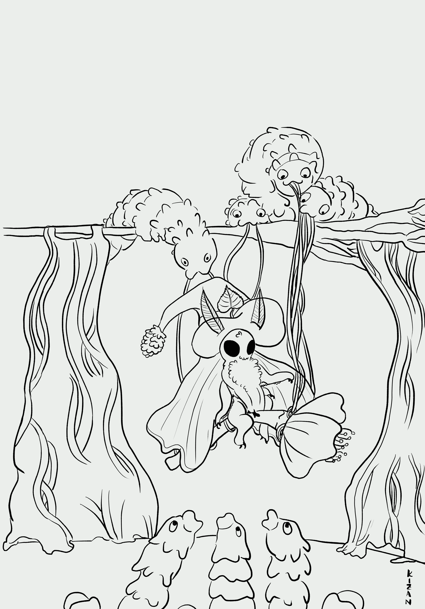
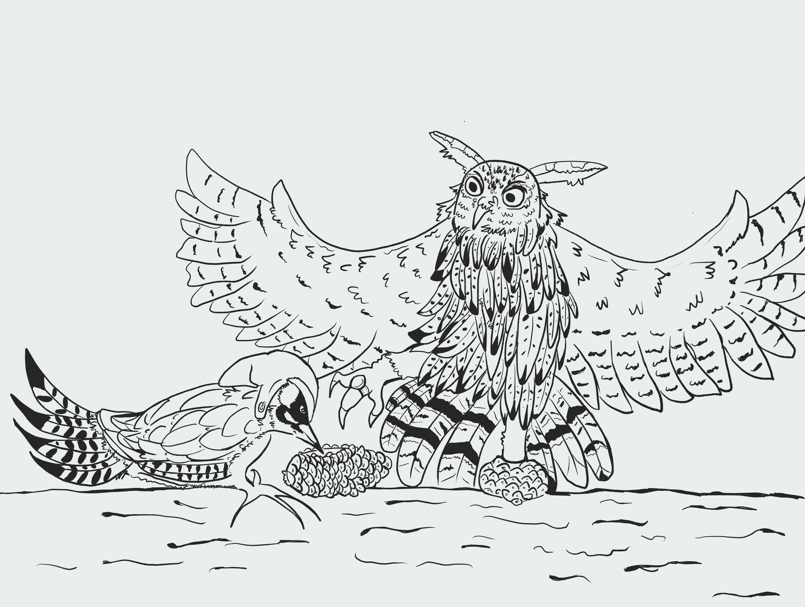

Leonardo Serantoni
Autore e illustratore di micro-storie visive
Scorci sul mondo animale e vegetale
Messa in scena (forse un po' bizzarra) di curiosità naturalistiche
Piccoli bachi da seta a teatro. La falena streghetta prova l'ebrezza del volo su un fiore di gelso

Con il millenario addomesticamento del baco da seta, le falene di questa specie hanno perso la capacità di volare. Le larve si nutrono esclusivamente di foglie di gelso e sono quelle che producono il bozzolo di seta.
Un picchio verde fa da ciabattino al gufo reale con due pigne.

Una traccia che mostra la presenza del Picchio verde è la pigna di pino marittimo svuotata in quel modo
Una stella marina non riesce a trattenere il suo stomaco di fronte alla sua amata cozza. Il cameriere sta versando il Nero di Seppia, ma si è distratto. Anche la medusa bioluminescente è un dipendente del ristorante.

Le stelle marine digeriscono le loro prede facendo fuoriuscire il loro stomaco. Alcune meduse sono bioluminescenti.
Una ranocchietta sfida uno Svasso maggiore

Talvolta, le rane sono preda degli Svassi.
Contatti
Email: leo_xer_das@outlook.it